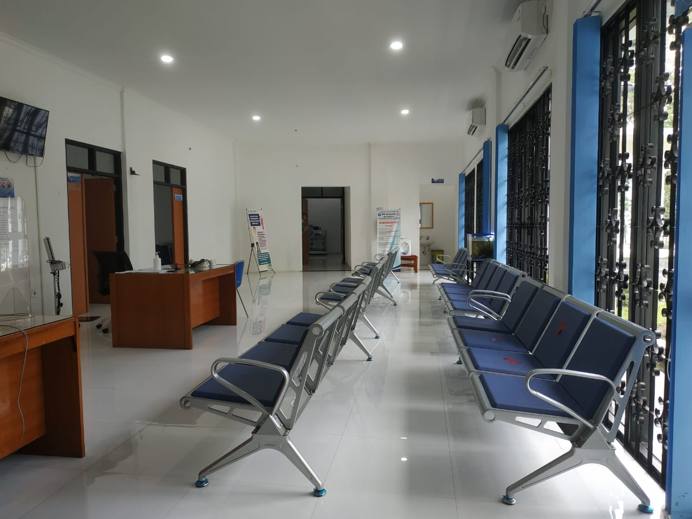
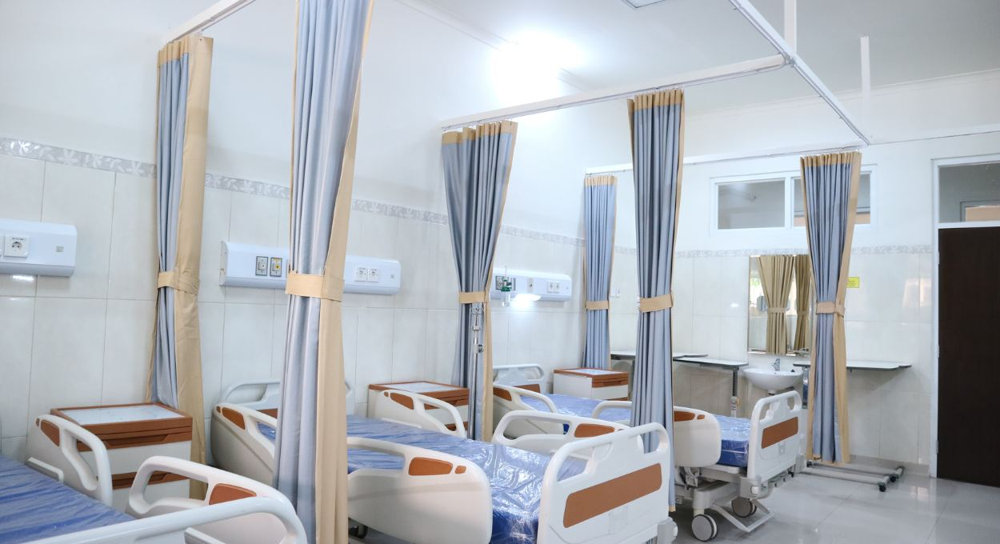

Kenyamanan Pasien dengan Dukungan Alat Medis Modern
Kembali Ke Beranda
Dilengkapi dengan AC, wi-fi gratis, dan area bermain anak untuk kenyamanan Anda
Menggunakan teknologi USG 4D dan perlatan laboratorium otomatis untuk hasil yang akurat

Kamar rawat inap dengan standar privasi tinggi dan pemantauan medis 24 jam